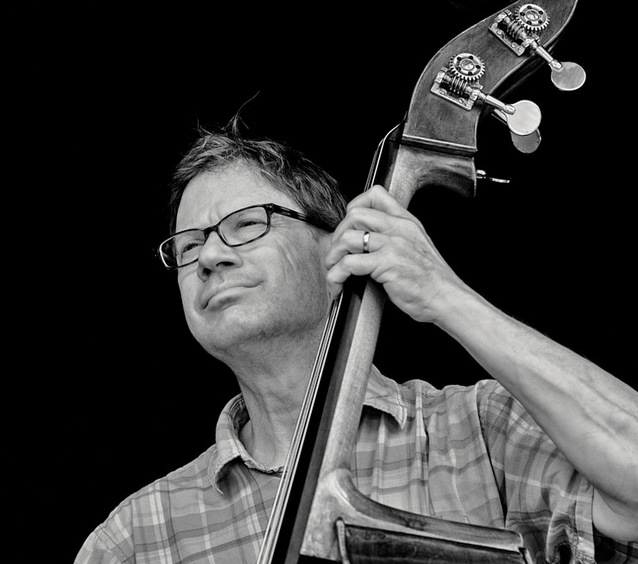

Francis Deck, Bassist
String Bass | Electric Bass

Are you looking for HPF-Pre? Click here: https://sites.google.com/site/hpftechllc/
Music
Thanks for visiting my page. If you’re looking for a versatile upright or electric bassist you’ve come to the right place! My experience includes three decades of freelance jazz gigs, symphonic and chamber groups, pit orchestras, ethnic dance bands, and so forth. I offer a complete range of skills, including fluent sight-reading, improvisation, knowledge of the standard jazz repertoire, and simply being easy to deal with.
I moved to Madison in 1997, and have played with numerous local groups, on a regular or freelance basis. Presently, I play with the Madison Jazz Orchestra, Inside Pocket, Swingtime Music.
Electronics and Speakers
Related to music, I’m an electronics and audio hobbyist. As I accumulate results, if they’re interesting, then I write them up to share. Often, I find that writing a brief report helps me critique my own ideas, and also attracts helpful comments that improve my knowledge.
Professional
By day, I’m a senior staff scientist with Thermo Fisher Scientific Corp., the world leader in serving science. It’s a great place to work. I have a PhD in physics, 20 patents, and extensive experience in development of optical and electronic instrumentation systems. Many of my projects involve combinations of optics, electronics, embedded systems, and software development.
Blog, Articles, Projects
11/19/2023 New! 8-inch bass speaker design: I built this speaker just before the pandemic, and have used it form most of my gigs since then.
1/17/2023 Optical Ray Tracing (GitHub repo): This is a primitive optical ray tracing program, in the form of a Jupyter notebook.
1/3/2023: Measuring Noise and low-noise test amplifier. These articles document my technique for measuring very low levels of electronic noise using mainstream hardware and software. I used this setup to test a new design.
Older stuff:
Speaker Theory (GitHub repo): I’ve always been interested in how gear works, including speakers. For years, comments on forums would say things like: “Speakers work in this way or that way, because of the physics.” I always wondered: What physics?
I decided to derive the basic electromagnetic theory of sealed and ported speakers from scratch. Here’s what I’ve learned so far. There are two links here. The first is to a GitHub page with “source code” for my derivations, in case you want to do calculations yourself. The second is a PDF of my article in case anybody just wants to read it.
Admittedly, it’s not very readable. I need to go back and improve it! If you just want to read the article, here’s a PDF
12-inch bass speaker design article: I built this speaker in 2006, and it’s still alive and kicking. I’ve included a brief technical write-up and sketches of construction plans. It uses an Eminence DeltaLite 2512-ii driver, which is one of the first neodymium-magnet drivers suitable for bass speaker use. Newer drivers outperform the 2512-ii in terms of power handling, but what I’ve got is more than I’ll ever need for all of my gig work.
4th order high pass filter: This circuit was an early prototype for HPF-Pre Series 3, but I chose to proceed with an op amp circuit instead. So I’m sharing this strange but true discrete filter design here.
Bare-bones bass blender: This is another prototype for something that I decided not to commercialize at the time. It’s a two channel preamp / mixer with active bass and treble controls, and additional features.
JFET bass preamp: A complete bass preamp using discrete JFET circuitry: Gain, bass, treble, mid with variable center frequency, and volume.
Online speaker modeling program (new): A basic modeling program for sealed and ported loudspeakers based on the equations in my speaker theory article. I wrote this as an exercise to learn how to write Web apps in Python.
Online speaker modeling program (older): Javascript version of above. I made a pretty good effort to keep it up to date, but the Python code is a lot easier to maintain.